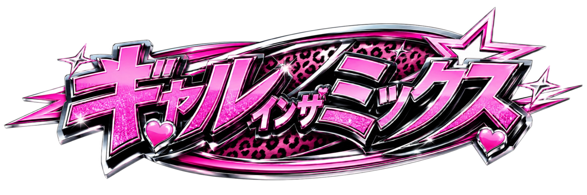

街をつないで、うちらの音に。
01 / BUILD YOUR NIGHT
うちらの走り、
決めてこ。
くるまもスタイルも、今日は自分で選ぶ。6つのクラブへ音を集めに行こ。
YOUR STYLE
最初の武器、どれで行こ？
ハート・カメラ・レコード・低音。ひとつ選んで、道中で組み合わせよ。
相棒のくるま
完走でもらうギャルポイントで解禁。出発したら、このくるまで最後まで行こ。
今夜、ここから。
NIGHTFALL TOUR
CREW RANK 1
うちらのスタイル、これから。
出発準備ハートで街をつなご次のEV
次のクラブへ0 m
ファン 0 人ちゃなのハート、届けよ
コイン000
THE FINAL SHOW
集めた音、全部鳴らそ。
飛ぶ・充電・加速でフロアを盛り上げよ。見てるだけでもOKやで。
DJちゃな / ナビ担当
ありねぇ、運転頼むで！今夜の音、ふたりで集めよ！
道のり 1 / 12
今夜、どの道で行こ？
寄り道で出会った音も、うちらのセットになる。
NOW / いまここ出発ガレージここから、3つの道に分岐
走りたい街角を選ぼ
NEXT / 次のクラブ中野 / BEAT BASE 175あと2本の道でクラブ到着
どの分岐も同じクラブへ。道の長さ・充電所・出会いが変わるで。
うちらのガレージ
稼いだコインで、この旅だけの走りをつくろ。組み合わせで、もっと強く。
基本のパーツも盛ってこ
NIGHTFALL TOUR
1 / 1DJありねぇ
6つのクラブで、うちらの新曲を鳴らそ。旅の思い出は、プリ帳とMDに。
これまでの旅を振り返る
REMIX YOUR RUN
次の走り、どう盛る？
ひとつ選んで、この旅だけの組み合わせをつくろ。